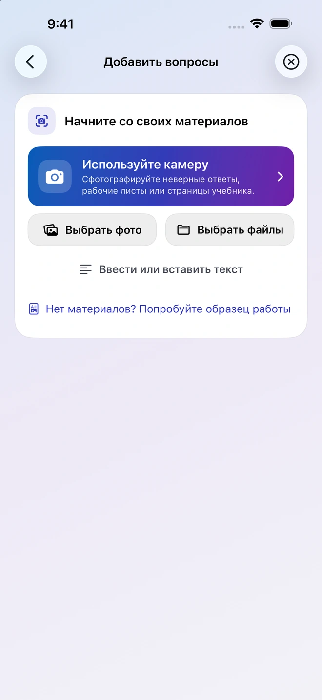
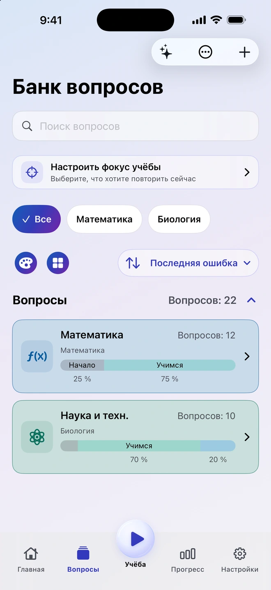
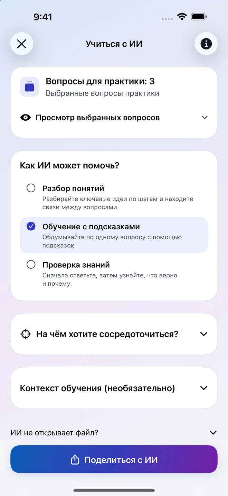
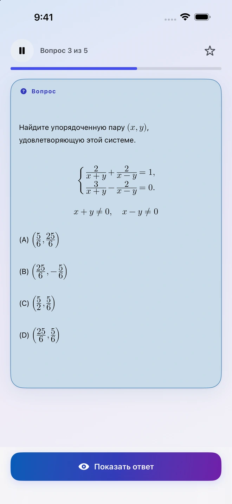
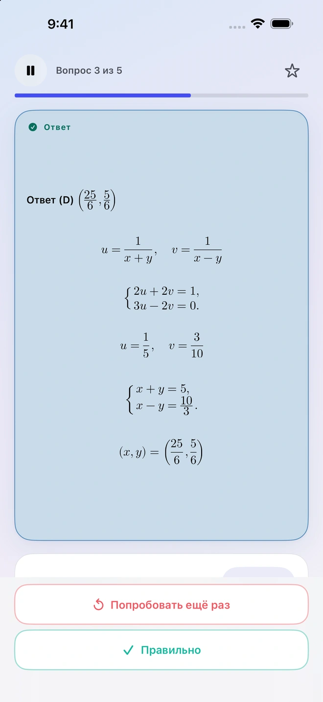
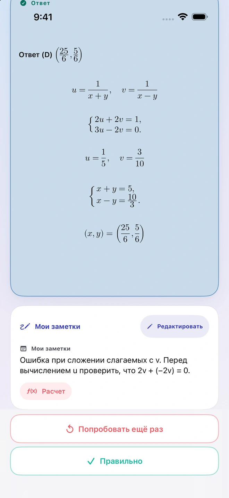
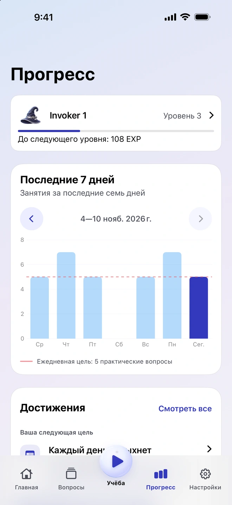

Составляйте вопросы по своим материалам
Добавьте фото, PDF, документ или заметку. Quiz Invoker подготовит материалы и инструкции для выбранного вами совместимого приложения с ИИ. Проверьте полученные вопросы и импортируйте их в свой банк.
Приложение для учёбы на iPhone
Начните со страницы учебника, конспекта или задания, в котором ошиблись. Добавьте материал в Quiz Invoker, проверьте полученные вопросы и сохраните те, к которым хотите вернуться.
Как это работает

Сохраняйте нужные вопросы и возвращайтесь к ним по мере необходимости.
Добавьте фото, PDF, документ или заметку. Quiz Invoker подготовит материалы и инструкции для выбранного вами совместимого приложения с ИИ. Проверьте полученные вопросы и импортируйте их в свой банк.
Отправьте выбранные вопросы в стороннее приложение с ИИ. Попросите объяснить тему, давать подсказки по одной или проверить ваше понимание. Вы сами решаете, какими файлами и заметками поделиться.

Попробуйте решить задачу самостоятельно. Затем посмотрите ответ и оцените результат. Запишите, что вызвало затруднение, чтобы вспомнить об этом на следующем занятии.


На графике за семь дней видны недавние занятия и дневная цель. Откройте заметки к вопросу, чтобы вспомнить ход решения.


Занимайтесь и наводите порядок в банке вопросов офлайн, без аккаунта Quiz Invoker. Материалы подготавливаются на устройстве. С тем, чем вы решили поделиться, работает выбранное вами стороннее приложение с ИИ.